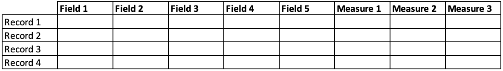
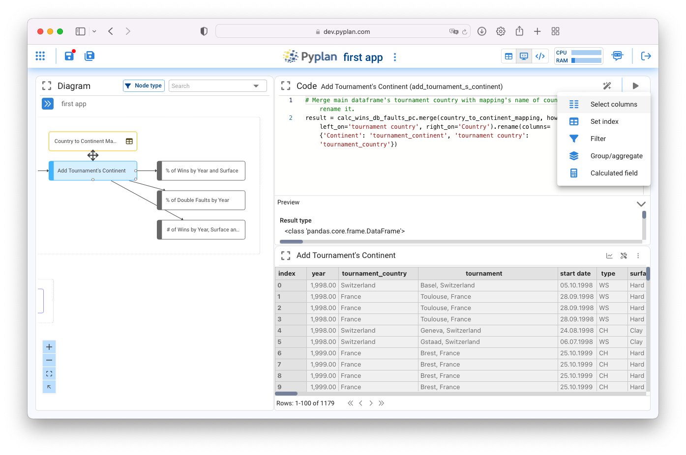

Codificando en Pyplan
Contents
Codificando en Pyplan#
Pyplan es una plataforma No-code / Low-code pensada para que usuarios sin conocimientos de programación puedan construir y compartir aplicaciones de Data Analytics y Planning. Para esto permite hacer muchas tareas tanto de manipulación y procesamiento de datos, como de construcción de interfaces de usuario, sin necesidad de codificación.
No-code#
Desarrollar todo lo que se puede hacer antes de modificar el codigo Construccion ============
entrada de datos (tipos) formulario = tabla + persistencia en DB
conexion a fuentes de datos externas (comentar las opciones con wizards)
variable (conectar a la lectura, ejecutar, explicar wizards, mostrar la alteracion de codigo)
Index se vera mas adelante
Organizacion del diagrama#
Text Modulo (arrastrar, cortar y pegar) Color de los nodos funcionamiento
Ejecucion de nodos#
Funcionamiento del mecanismo de calculo
Low-code#
Pyplan interpreta de forma nativa algunas estructuras de datos del tipo Tablas y Cubos proveniente de las librerías de Python mas difundidas (Pandas, Numpy, Xarray). Los Cubos de datos pueden tener cualquier numero de dimensiones. Estas dimensiones a su vez pueden estar nominadas o ser indefinidas.
Nota
incluir un grafico que ilustre una tabla, un cubo xarray y un cubo numpy
Tablas#
Una tabla se asemeja a una tabla en base de datos, es decir es una estructura de datos donde cada columna representa un atributo o medida y donde cada fila corresponde a un registro particular de esos atributos o medidas.
Las tablas de datos en Pyplan corresponden al objeto Dataframe de la librería Pandas, una de las librerías mas utilizadas en Data Science. Documentación sobre las funcionalidades de de los Dataframes en Pandas puede consultarse aquí.
La principal diferencia entre una tabla en base de datos y un Dataframe es que este último reside en memoria y no en disco. De ahi proviene su velocidad de procesamiento.
Cuando un nodo es calculado y su resultado devuelve un objeto Dataframe de Pandas, Pyplan presenta automáticamente un conjunto de herramientas para operar con ese Dataframe.
Al utilizar esos asistentes para la operación deseada, el usuario podrá observar como el código de definición se va generando.
Cubos#
Desarrollar el concepto de cubo
Mostrar herramientas de creacion de cubos e indices a partir del dataframe
input dataarray mencionar
operaciones con cubos (broadcasting de dimensiones)
funcionamiento del dynamic
Ayudas a la codificacion#
intellisense
tooltips
shortcuts de navegacion (Ctrl+click, alt/option + click, pineado de nodos)
bot
asistente de codigo
preview
consola de errores